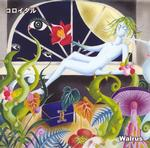

| Artist: | Walrus |
| Title: | Colloidal |
| Label: | ADDA-002 |
| Length(s): | 50 minutes |
| Year(s) of release: | 2005 |
| Month of review: | [10/2007] |
| 1) | The Parade Of Hoshikui | 9.06 |
| 2) | Somewhere And Nowhere | 4.09 |
| 3) | A Dark Side House | 4.47 |
| 4) | The Boat Lilica Draw | 6.09 |
| 5) | Paper Plane | 3.22 |
| 6) | Real Guard Gondola On Last Ob The World | 5.20 |
| 7) | A Man Who Raises A Weed | 4.29 |
| 8) | A Medical-bin And Awakening | 9.27 |
| 9) | Pinhole Camera | 4.19 |
Somewhere And Nowhere opens with a marching rhythm, but slowly and subduedly. Languid even. Suddenly, the pace sets in, but only shortly. Again, the music has a strong artrock feel, combining prog and New Wave. This is mainly due to the rhtyhm guitar play. The singing and playing is overall a bit sloppy, as if timing is not very important. On the other hand, the band has a bit of the early adventurousness of Genesis, but translated to another time. But they certainly do not sound like they recorded this in 2005.
A Dark Side House has softy jazzy drums, and an even more subdued sound compared to the previous song. The atmosphere is one of a jazz band with a crooner. And plenty of atmosphere there is. When the drums set in more forcefully, we end up again with something akin a marching rhythm and Hackettish guitar lines in the back. Melodically, the band owes more to say the Cardiacs. There is a certain quirkiness and merriness to their melodies. At some point the band erupts into an up-beat part where this is the case. But soon after the music dies down to a chaotic jumble of sounds. And indeed, we have arrived at The Boat Lilica Draw (this is how I obtained the title from the band themselves, although one would expect Drew instead of Draw). This song has swirly guitars and keyboards, moving us in the environs of space rock. The vocal melodies are very recognizable and distinctive. Then we enter a more rhythmic realm, but the melody continues. The guitar lends some powerful accents here. The guitar can be quite heavy here. I guess, psychedelic rock is the denominator here, with a Kraftwerk twist at the end.
Paper Plane has some stately guitar work, somewhat in the Firth of Fifth vein. Musically, this is quite okay again, with some nice twists to the melodies and notwithstanding the stately opening, there are again louder parts that reek of surf and other more up-beat genres. Still, there continues to be a sloppiness to the music that is not typical for the style. Is it the vocal work? Is it on purpose? Or is it lack of productional quality?
Real Guard Gondola On Last Ob The World (again I wonder about the title), is a quirkly up-beat tune. Again a marching rhtyhm is used, although it reminds me most of a song by Aemen (on their last album). Generally though, this song is a bit more 'party-style'. To compensate we get mainly acoustic guitars on A Man Who Raises A Weed. The vocals are soothing, with only a twist to the vocals in the middle. But then the song powers up, in a big way. A Medical-bin And Awakening is a rather long tune with all the typical ingredients, but this time the song powers up sooner rather than later. The drummer is pretty active here. This time we obtain a waltzy soft interlude after a minute or three (not particularly necessary, but it does lead us to the next eruption). The songs ends weirdly.
As Pinhole Camera starts, it seems we are in 'mainstream' rock territory. I mean, this is comparable to modern day quality rock. But the vocals are in Japanese and soon the rock dies down. The backing vocals are intermixed well on this excellent pop song, which has plenty of sixties influences as well.